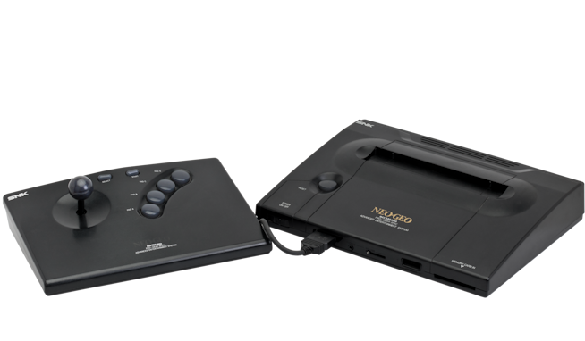
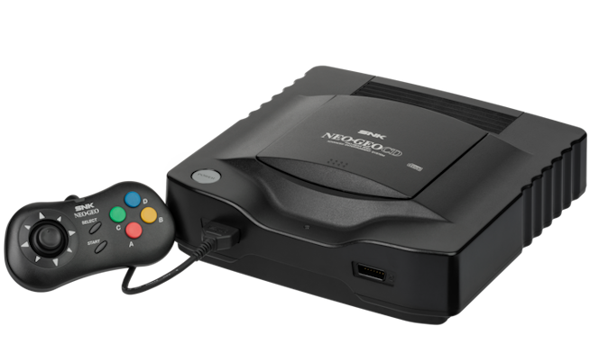

Neo Geo AES
Neo Geo Advanced Entertainment System, más conocida como Neo Geo AES, fue la versión doméstica del sistema arcade de SNK. Fue lanzada en 1994 y se caracterizó por su gran calidad gráfica, su enorme nivel de detalle y la gran fidelidad a los juegos arcade.
Más de 1.000.000 unidades vendidas.

Neo Geo CD
La Neo Geo CD fue una variante del sistema Neo Geo basada en disco compacto, lanzada en 1994. Ofrecía un formato más económico y accesible para el hogar, manteniendo la excelente calidad jugable y la biblioteca de títulos de SNK.
Más de 600.000 unidades vendidas.
